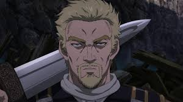

Askeladd, cujo verdadeiro nome é Lucius Artorius Castus, é um mercenário inteligente e estrategista de Vinland Saga. Filho de uma escrava galesa e de um guerreiro viking, ele sonhava em proteger o País de Gales. Ele ficou marcado por matar Thors, pai de Thorfinn, o que fez Thorfinn buscar vingança. Mesmo sendo inimigos, Askeladd ajudou no desenvolvimento de Thorfinn e teve papel importante na ascensão do príncipe Canute.